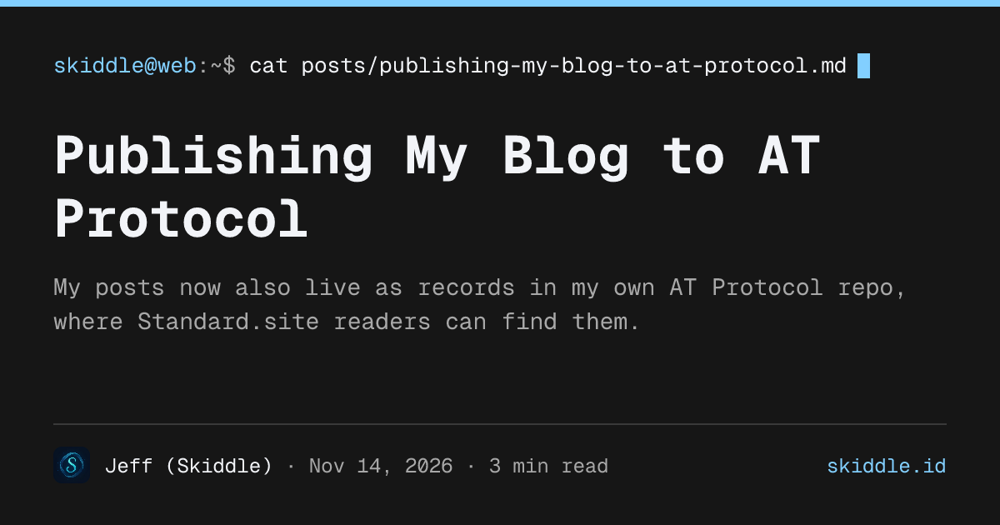

Hi, I'm Jeff.
protocol engineer · Skiddle Labs · Bangkok
I write about infrastructure, open protocols and my homelab, and I fly as a private pilot.
more about me work with me open to consulting

latestNov 14, 2026 · 3 min Publishing My Blog to AT ProtocolnowNov 2026
- Protocol engineering on contract, with my Skiddle Labs team (since Q3 2026)
- Advising Aerialite, the security & privacy startup I co-founded
- Master's in AI & machine learning at Chulalongkorn
- Flying as a newly licensed private pilot (PPL, early 2026)
flight bag: ForeFlight, SkyVector, Windy last played♫ Ancika - Original Soundtrack Dilan ITB 1997 Ariel NOAH
seriesall →
Rebuilding skiddle.id6 parts · latest: Fast and Accessible
From Fear to Flightpart 1 of 6 · next: Ground School
checkdomain2 parts · EN ID
writingall posts →
workall work →
CheckDomainTrust+ blocklist API, peaked at ~500M requests a month · 2024
ShortlinkURL shortener on Workers and Turso, runs skiddle.link · 2025
Blocklistpublic copy of the Kominfo blocklist, updated hourly · 2024
contact
Need a hand with infrastructure?
Server hardening, CI/CD, automation, monitoring and self-hosting.